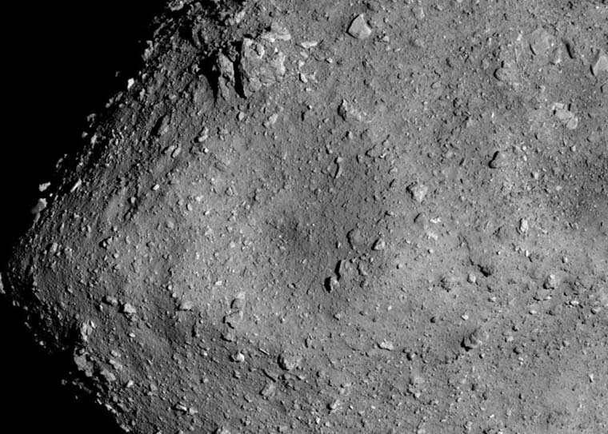

Left: A photograph of the rocks retrieved by Hayabusa2 from the asteroid Ryugu.
Left: A photograph of the rocks retrieved by Hayabusa2 from the asteroid Ryugu.
After a six-year journey, a plucky spacecraft called Hayabusa2 zinged back into Earth's atmosphere in late 2020 and landed deep in the Australian outback. When researchers from the Japanese space agency JAXA opened it, they found its precious payload sealed and intact: a handful of dirt that Hayabusa2 managed to scoop off the surface of a speeding asteroid. Scientists have now begun to announce the first results from the analysis of this extraordinary sample. What they found suggests that this asteroid is a piece of the same stuff that coalesced into our sun four-and-a-half billion years ago. "We previously only had a handful of these rocks to study, and all of them were meteorites that fell to Earth and were stored in museums for decades to centuries, which changed their compositions," said geochemist Nicolas Dauphas, one of the three University of Chicago researchers who worked with a Japan-led international team of scientists to analyze the fragments. "Having pristine samples from outer space is simply incredible. They are witnesses from parts of the solar system that we have not otherwise explored."
Perseverance rover has made a friend on Mars
In 2018, Hayabusa2 landed atop a moving asteroid named Ryugu and collected particles from above and below its surface. After spending a year and a half orbiting the asteroid, it returned to Earth with a sealed capsule containing about five grams of dust and rock. Scientists around the world have been eagerly anticipating the unique sample—one that could help redefine our understanding of how planets evolve and how our solar system formed. Scientists are particularly excited because these particles would never have reached Earth without the protective barrier of a spacecraft. "Usually, all we get to study of asteroids is the pieces that are big enough to make it to the ground as meteorites," said UChicago geochemist Andrew M. Davis, another member of the analysis team. "If you took this handful and dropped it in the atmosphere, it would burn up. You would lose it, and a lot of evidence about the history of this asteroid would go with it.
 Petrography of the Ryugu sample. (A) Backscattered electron (BSE)Davis, Dauphas and UChicago colleague Reika Yokochi are all part of a team assembled to help Japanese researchers analyze the samples. Each part of the capsule's contents is being rigorously studied. Yokochi is part of a team that is analyzing the gases that were trapped in the capsule or in the dirt. Dauphas and Davis are part of a team that is studying the chemical and isotopic compositions grains to reveal their history. The first compilation of these results, reported in Science on June 9, reveal the makeup of Ryugu. The rock is similar to a class of meteorites known as "Ivuna-type carbonaceous chondrites." These rocks have a similar chemical composition to what we measure from the sun and are thought to date back to the very beginnings of the solar system approximately four-and-a-half billion years ago—before the formation of the sun, the moon and Earth. [should Moon be capitalized to distinguish it from other moons?]